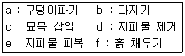
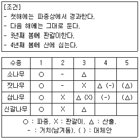
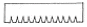
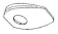
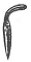
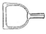

산림기능사 (2015-07-19 기출문제)
1과목: 조림 및 육림기술
1. 산림토양층에서 가장 위층에 있는 것은?
- 표토층
- 심토층
- 모재층
- 유기물층
(정답률: 88%)

2. 덩굴제거 작업에 대한 설명으로 옳지 않은 것은?
- 물리적방법과 화학적방법이 있다.
- 콩과식물은 디캄바액제를 살포한다.
- 일반적인 덩굴류는 글라신액제로 처리한다.
- 24시간 이내 강우가 예상될 경우 약제 필요량보다 1.5배 정도 더 사용한다.
(정답률: 92%)
3. 묘목의 가식 작업에 관한 설명으로 옳지 않은 것은?
- 장기간 가식할 때에는 다발채로 묻는다.
- 장기간 가식할 때에는 묘목을 바로 세운다.
- 충분한 양의 흙으로 묻은 다음 관수(灌水)를 한다.
- 일시적으로 뿌리를 묻어 건조 방지 및 생기 회복을 위해 실시한다.
(정답률: 89%)
4. 묘목의 식혈식재(구덩이 식재)순서를 바르게 나열한 것은?

- d → a → c → f → b → e
- d → c → a → f → b → e
- d → a → c → b → f → e
- d → c → a → b → f → e
(정답률: 89%)
5. 다음 중 맹아갱신 작업에 가장 유리한 수종은?
- 소나무
- 전나무
- 신갈나무
- 은행나무
(정답률: 71%)
6. 결실을 촉진시키는 방법으로 옳은 것은?
- 수목의 식재밀도를 높게 한다.
- 줄기의 껍질을 환상으로 박피한다.
- 간벌이나 가지치기를 하지 않는다.
- 차광망을 씌워 그늘을 만들어 준다.
(정답률: 90%)
7. 다음 중 내음성이 가장 강한 수종은?
- 밤나무
- 사철나무
- 오리나무
- 버드나무
(정답률: 69%)
8. 실생묘 표시법에서 1 - 1 묘란?
- 판갈이한 후 1년간 키운 1년생 묘목이다.
- 파종상에서만 1년 키운 1년생 묘목이다.
- 판갈이를 하지 않고 1년 경과된 종자에서 나온 묘목이다.
- 파종상에서 1년 보낸 다음, 판갈이하여 다시 1년이 지난 만 2년생 묘목으로 한 번 옮겨 심은 실생묘이다.
(정답률: 89%)
9. 다음 중 결실주기가 가장 긴 수종은?
- 곰솔
- 소나무
- 전나무
- 일본잎갈나무
(정답률: 68%)
10. 수확을 위한 벌채 금지 구역으로 옳지 않은 것은?
- 내화수림대로 조성 ㆍ 관리되는 지역
- 도로변 지역은 도로로부터 평균 수고폭
- 벌채구역과 벌채구역 사이 100m 폭의 잔존수림대
- 생태통로 역할을 하는 8부 능선 이상부터 정상 부, 다만 표고가 100m 미만인 지역은 제외
(정답률: 70%)
11. 조림목과 경쟁하는 목적 이외의 수종 및 형질불량 목이나 폭목 등을 제거하여 원하는 수종의 조림목이 정상적으로 생장하기 위해 수행하는 작업은?
- 풀베기
- 간벌작업
- 개벌작업
- 어린나무 가꾸기
(정답률: 67%)
12. 리기다소나무 노지묘 1년생 묘목의 곤포당 본수는?
- 1000본
- 2000본
- 3000본
- 4000본
(정답률: 73%)
13. 종묘사업 실시요령의 종자품질기준에서 다음 중 발아율이 가장 높은 수종은?
- 곰솔
- 주목
- 전나무
- 비자나무
(정답률: 67%)
14. 연료채취를 목적으로 벌기령을 짧게 하는 작업종은?
- 죽림작업
- 택벌작업
- 왜림작업
- 개벌작업
(정답률: 90%)
15. 중림작업의 상층목 및 하층목에 대한 설명으로 옳지 않은 것은?
- 일반적으로 하층목은 비교적 내음력이 강한 수종이 유리하다.
- 하층목이 상층목의 생장을 방해하여 대경재생산에 어려운 단점이 있다.
- 상층목은 지하고가 높고 수관의 틈이 많은 참나무류 등 양수종이 적합하다.
- 상층목과 하층목은 동일 수종으로 주로 실시하나, 침엽수 상층목과 활엽수 하층목의 임분구성을 중림으로 취급하는 경우도 있다.
(정답률: 61%)
16. 가지치기에 관한 설명으로 옳지 않은 것은?
- 포플러류는 역지(으뜸가지) 이하의 가지를 제거한 다.
- 임목의 질적 개선으로 옹이가 없고 통직한 완만재 생산을 위한 육림작업이다.
- 큰 생가지를 잘라도 위험성이 적은 수종은 물푸레나무, 단풍나무, 벚나무, 느릅나무 등이다.
- 나무가 생리적으로 활동하고 있을 때 가지치기를 하면 껍질이 잘 벗겨지고 상처가 크게 된다.
(정답률: 84%)
17. 다음의 표를 참고하여 아래 조건에 대하여 적합한 수종은?

- 소나무
- 잣나무
- 삼나무
- 신갈나무
(정답률: 83%)
18. 잔존시키는 임목의 성장 및 형질 향상을 위하여 임목 간의 경쟁을 완화시키는 작업은?
- 개벌작업
- 간벌작업
- 택벌자업
- 산벌작업
(정답률: 71%)
19. 3년생 잣나무를 관리하기 위해 풀베기 작업 계획 수립 시 가장 적절하지 않은 것은?
- 모두베기를 한다.
- 5~8년간은 계속한다.
- 5~7월 중에 실행한다.
- 잡초가 무성한 곳은 한 해에 2번 실행한다.
(정답률: 62%)
20. 나무를 굽게 하고 생장을 저하시키며 심한 경우 나무줄기를 부러뜨리는 기후 인자는?
- 수분
- 바람
- 광선
- 온도
(정답률: 94%)
21. 모수작업법을 이용한 산림 갱신에서 모수의 조건으로 적합하지 않은 것은?
- 유전적 형질이 좋아야 한다.
- 우세목 중에서 고르도록 한다.
- 종자는 많이 생산할 수 있어야 한다.
- 바람에 대한 저항력은 고려 대상이 아니다.
(정답률: 92%)
22. 종자 검사에 관한 설명으로 옳지 않은 것은?
- 실중이란 1리터에 대한 무게를 나타낸 것이다.
- 효율이란 발아율과 순량율의 곱으로 계산할 수 있다.
- 발아율이란 일정한 수의 종자 중에서 발아력이 있는 것을 백분율로 표시한 것이다.
- 순량율이란 일정한 양의 종자 중 협잡물을 제외한 종자량을 백분율로 표시한 것이다.
(정답률: 74%)
23. 2ha의 면적에 2m 간격으로 정방형으로 묘목을 식재 하고자 할 때 소요 묘목본수는?
- 2000본
- 2500본
- 4000본
- 5000본
(정답률: 71%)
24. 산벌작업의 순서로 옳은 것은?
- 예비벌 → 후벌 → 하종벌
- 하종벌 → 예비벌 → 후벌
- 예비벌 → 하종벌 → 후벌
- 하종벌 → 후벌 → 예비벌
(정답률: 88%)
25. 밤나무 종자의 정선 방법으로 가장 좋은 것은?
- 입선법
- 수선법
- 풍선법
- 사선법
(정답률: 78%)
2과목: 산림보호
26. 솔잎혹파리에 대한 설명으로 옳지 않은 것은?
- 완전변태를 한다.
- 솔잎의 기부에서 즙액을 빨아 먹는다.
- 1년에 2회 발생하며 알로 월동한다.
- 기생성 천적으로 솔잎혹파리먹좀벌 등이 있다.
(정답률: 75%)
27. 다음 살충제 중에서 불임제의 작용 특성을 가진 것은?
- 비산석회
- 알킬화제
- 크레오소트
- 메틸브로마이드
(정답률: 60%)
28. 잣이나 솔방울 등 침엽수의 구과를 가해하는 해충 은?
- 솔나방
- 솔박각시
- 소나무좀
- 솔알락명나방
(정답률: 75%)
29. 어스렝이나방에 대한 설명으로 옳지 않은 것은?
- 알로 월동한다.
- 1년에 1회 발생한다.
- 유충이 열매를 가해한다.
- 플라타너스, 호두나무 등을 가해한다.
(정답률: 66%)
30. 세균에 의한 병이 아닌 것은?
- 잎떨림병
- 불마름병
- 뿌리혹병
- 세균성 구멍병
(정답률: 58%)
31. 벚나무빗자루병의 방제법으로 옳지 않은 것은?
- 디페노코나졸 입상수화제를 살포한다.
- 옥시테트라사이클린 항생제를 수간주사 한다.
- 동절기에 병든 가지 밑부분을 잘라 소각한다.
- 이미녹타딘트리스알베실레이트 수화제를 살포한다.
(정답률: 63%)
32. 다음 살충제 중 가장 친환경적인 농약은?
- 비티수화제
- 디프수화제
- 메프수화제
- 베스트수화제
(정답률: 71%)
33. 피해목을 벌채한 후 약제 훈증처리의 방제가 필요한 수병은?
- 뽕나무 오갈병
- 잣나무털녹병
- 소나무 잎녹병
- 참나무 시들음병
(정답률: 67%)
34. 저온에 의한 피해의 종류가 아닌 것은?
- 상한(frost harm)
- 상렬(frost crack)
- 상해(frost injury)
- 상주(frost heaving)
(정답률: 58%)
35. 대기오염물질 중 아황산가스에 잘 견디는 수종으로 옳은 것은?
- 전나무, 느릅나무
- 소나무, 사시나무
- 단풍나무, 향나무
- 오리나무, 자작나무
(정답률: 70%)
36. 미국흰불나방이나 텐트나방의 유충은 함께 모여 살면서 잎을 가해하는 습성이 잇는데, 이를 이용하여 유충을 태워 죽이는 해충 방제 방법은?
- 경운법
- 차단법
- 소살법
- 유살법
(정답률: 81%)
37. 바이러스에 의한 수목병으로 옳은 것은?
- 전나무 잎녹병
- 밤나무 줄기마름병
- 대추나무빗자루병
- 아까시나무 모자이크병
(정답률: 82%)
38. 내화력이 강한 수종으로 옳은 것은?
- 사철나무, 피나무
- 분비나무, 녹나무
- 가문비나무, 삼나무
- 사시나무, 아까시나무
(정답률: 62%)
39. 우리나라에서 발생하는 주요 소나무류 잎녹병균의 중간기주가 아닌 것은?
- 잔대
- 현호색
- 황벽나무
- 등골나물
(정답률: 61%)
40. 선충에 대한 설명으로 옳지 않은 것은?
- 기생성 선충과 비기생성 선충이 있다.
- 대부분이 잎에 기생하며 잎의 즙액을 먹는다.
- 선충에 의한 수목병은 뿌리썩이선충병과 소나무재 선충병 등이 있다.
- 기생 부위에 따라 내부기생, 외부기생, 반내부기생선충으로 나눌 수 있다.
(정답률: 65%)
3과목: 임업기계일반
41. 2행정 내연기관에서 외부의 공기가 크랭크실로 유입되는 원리로 옳은 것은?
- 피스톤의 흡입력
- 기화기의 공기펌프
- 크랭크축 운동의 원심력
- 크랭크실과 외부와의 기압차
(정답률: 73%)
42. 기계톱에 사용하는 윤활유에 대한 설명으로 옳은 것은?
- 윤활유 SAE 20 W 중 W는 중량을 의미한다.
- 윤활유 SAE 30 중 SAE는 국제자동차협회의 약자이다.
- 윤활유의 점액도 표시는 사용 외기온도로 구분된 다.
- 윤활유 등급을 표시하는 번호가 높을수록 점도가 낮다.
(정답률: 68%)
43. 내연기관에서 연접봉(커넥팅 로드)이란?
- 크랭크 양쪽으로 연결된 부분을 말한다.
- 엔진의 파손된 부분을 용접하는 봉이다.
- 크랭크와 피스톤을 연결하는 역할을 한다.
- 엑셀 레버와 기화기를 연결하는 부분이다.
(정답률: 85%)
44. 기계톱의 에어필터를 청소하고자 할 때 가장 적합한 것은?
- 물
- 오일
- 휘발유
- 휘발유와 오일 혼합액
(정답률: 74%)
45. 기계톱 작업 중 소음이 발생하는데 이에 대한 방음 대책으로 옳지 않은 것은?
- 작업시간 단축
- 방음용 귀마개 사용
- 머플러(배기구) 개량
- 안전복 및 안전화 착용
(정답률: 77%)
46. 디젤기관의 특징이 아닌 것은?
- 압축열에 의한 자연발화 방식이다.
- 연료는 윤활유와 함께 혼합하여 넣는다.
- 진동 및 소음이 가솔린기관에 비해 크다.
- 배기가스 온도가 가솔린기관에 비해 낮다.
(정답률: 65%)
47. 기계톱에서 깊이 제한부의 주요 역할은?
- 톱날 보호
- 절삭 두께 조절
- 톱날 연결 고정
- 톱날 속도 조절
(정답률: 86%)
48. 예불기 구성요소인 기어 케이스 내 그리스(윤활유) 의 교환은 얼마 사용 후 실시하는 것이 가장 효과적인가?
- 10시간
- 20시간
- 50시간
- 200시간
(정답률: 67%)
49. 무육작업용 장비로 활용하기 가장 부적합한 것은?
- 손도끼
- 전정가위
- 재래식 낫
- 가지치기 톱
(정답률: 68%)
50. 산림용 기계톱에 사용하는 연료의 배합기준(휘발 유 : 엔진오일)으로 가장 적합한 것은?
- 25 : 1
- 4 : 1
- 1 : 25
- 1 : 4
(정답률: 92%)
51. 삼각톱니의 젖히기에 대한 설명으로 옳지 않은 것은?
- 침엽수는 활엽수보다 많이 젖혀 준다.
- 나무와의 마찰을 줄이기 위한 것이다.
- 젖힘의 크기는 0.2~0.5㎜가 적당하다.
- 톱니 뿌리선으로부터 1/3지점을 중심으로 젖혀준 다.
(정답률: 64%)
52. 임업용 기계톱의 엔진을 냉각하는 방식으로 주로 사용되는 것은?
- 공냉식
- 수냉식
- 호퍼식
- 라디에이터식
(정답률: 86%)
53. 분해된 기계톱의 체인 및 안내판을 다시 결합할 때 제일 먼저 해야 될 사항은?
- 스프라켓에 체인이 잘 걸려있는지 확인한다.
- 체인장력 조정나사를 시계 방향으로 돌려 체인장력을 조절한다.
- 체인을 스프라켓에 걸고 안내판의 아래쪽 큰 구멍을 안내판 조정핀에 끼운다.
- 체인장력 조정나사를 시계 반대 방향으로 돌려 장력조절핀을 안쪽으로 유도시킨다.
(정답률: 65%)
54. 벌목작업 도구 중에서 쐐기는?




(정답률: 90%)
55. 벌도와 벌도목을 모아쌓는 기능이 주목적으로 가지 제거나 절단 기능은 없는 임업기계는?
- 스키더
- 펠러번쳐
- 하베스터
- 프로세서
(정답률: 54%)
56. 산림작업의 벌출공정 구성요소로 옳지 않은 것은?
- 조사
- 벌목
- 조재
- 집재
(정답률: 75%)
57. 산림작업 도구에 대한 설명으로 옳지 않은 것은?
- 도구의 손잡이는 사용자의 손에 잘 맞아야 한다.
- 작업자의 힘이 최대한 도구의 날 부분에 전달 될 수 있어야 한다.
- 도구의 자루에 사용되는 재료는 열전도율이 높고 탄력이 좋아야 한다.
- 도구의 날과 자루는 작업 시 발생하는 충격을 작업자에게 최소한으로 줄일 수 있어야 한다.
(정답률: 91%)
58. 산림용 기계톱 구성요소인 쏘체인(sawchain)의 톱날 모양으로 옳지 않은 것은?
- 리벳형(rivet)
- 안전형(safety)
- 치젤형(chisel)
- 치퍼형(chipper)
(정답률: 63%)
59. 산림작업 시 준수할 사항으로 옳지 않은 것은?
- 안전장비를 착용한다.
- 규칙적으로 휴식한다.
- 가급적 혼자서 작업한다.
- 서서히 작업속도를 높인다.
(정답률: 91%)
60. 전문 벌목용 기계톱에서 본체의 일반적인 수명은?
- 약 150시간
- 약 450시간
- 약 600시간
- 약 1500시간
(정답률: 78%)